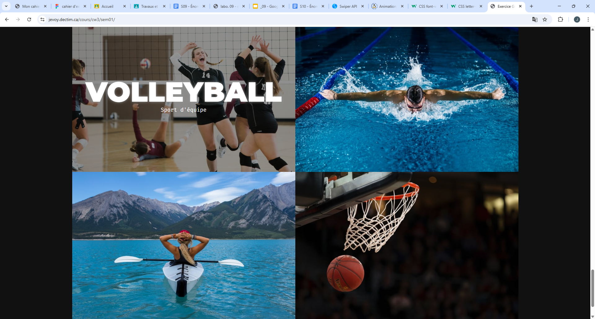

Sem 01 - Révision
Ce laboratoire m'a servi avec la révision de la matière vue dans les cours précédents.
HTML + CSS
Voir le laboratoireCe laboratoire m'a servi avec la révision de la matière vue dans les cours précédents.
HTML + CSS
Voir le laboratoireIci, j'ai appris à utiliser un stack de développement pour faciliter la création de site web.
HTML + CSS
Voir le laboratoireEn construisant ce site, j'ai renforcé mes compétences avec un stack de développement.
HTML + CSS
Voir le laboratoireLa construction de ce site m'a aidé à intégrer les icônes en SVG et le Javascript dans un site.
HTML + CSS
Voir le laboratoireOn a appris comment utiliser les breakpoints pour faire un site qui change selon l'écran.
HTML + CSS
Voir le laboratoireIci, nous avons renforcé les compétences apprises avec le réactif.
HTML + CSS
Voir le laboratoireNous avons vu comment utiliser Swiper JS pour faire un Swiper comme celui-ci.
HTML + CSS
Voir le laboratoire